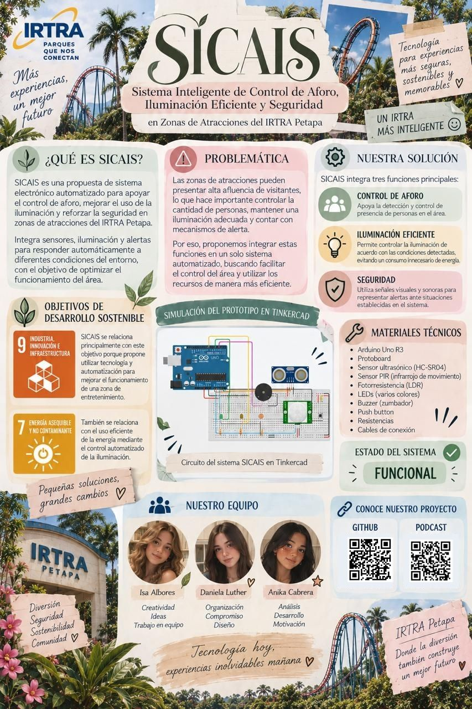

SICAIS
Sistema Control e Inspección Automatizado – IRTRA Petapa
📄 Word/PDF
🎬 Demostración Tinkercad
Tu navegador no soporta reproducción de video.
📊 Infografía

🎙️ Podcast
Tu navegador no soporta reproducción de audio.